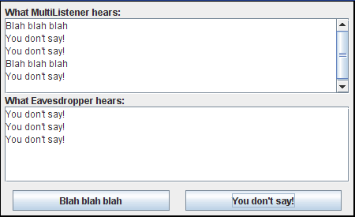

Lección: Escribiendo Listener Events
Introducción a los Listener Events
Si ha leido cualquiera de las páginas como de componentes, probablemente ya sepa lo fundamental de los event listeners.
Miremos uno de los más simples ejemplos de gestores de eventos posibles. Se llama Beeper, y su funcionalidad es un botón que pita cuando lo pulsa.
Pulse el botón Lanzar para ejecutar Beeper usando Java™ Web Start (descargue KDJ 7 o posterior). Alternativamente, para compilar y ejecutar el ejemplo por sí mismo, consulte el índice de ejemplos.
Puede encontrar el programa entero en
Beeper.java
. Aquí está el código que implementa el manejo del evento para el botón:
public class Beeper ... implements ActionListener {
...
//where initialization occurs:
button.addActionListener(this);
...
public void actionPerformed(ActionEvent e) {
...//Make a beep sound...
}
}
La clase Beeper implementa el interfaz
ActionListener, el cual contiene un método:
actionPerformed. Ya que Beeper implementa un ActionListener, un objeto
Beeper puede registrar un listener para los eventos de acción que el botón dispara. Una vez el
Beeper ha sido registrado usando el método addActionListener de Button,
el método actionPerformed de Beeper es llamado cada vez que se pulsa el botón.
Un Ejemplo Más Complejo
El modelo de evento, el cual vió como el más simple en el ejemplo precedente, es bastante poderoso y flexible. Cualquier número de objetos event listener pueden escuchar/monitorizar todas las clases de eventos desde cualquier número de objetos fuente de eventos. Por ejemplo, un programa podría crear un listener por fuente de evento. O un programa podría tener un único listener para todos los eventos de todas las fuentes. Un programa puede incluso tener más de un listener para una única clase de evento desde una única fuente de evento.

Se pueden registrar múltiples listeners para que sean notificados de eventos de un tipo particular desde una fuente particular. También, el mismo listener puede escuchar/monitorizar notificaciones desde objetos diferentes.
Cada evento es representado por un objeto que da información sobre el evento e identifica la fuente del evento. Las fuentes de evento son a menudo componentes o modelos, pero otras clases de objetos pueden ser también fuentes de eventos.
Siempre que desee detectar eventos de un componente en particular, compruebe primero la sección de procedimientos para ese componente. Una lista de las secciones de procedimientos de componentes está aquí. Las secciones de procedimientos brindan ejemplos de como manejar que más probablemente le interesen. En Cómo Usar Selectores de Color, por ejemplo, encontrará un ejemplo de escritura de un change listener para monitorizar cuando cambia el color en el selector de color.
El ejemplo siguiente demuestra que los event listeners pueden ser registrados en múltiples objetos y que el
mismo evento puede ser enviado a múltiples listeners. El ejemplo contiene dos fuentes de eventos (instancias de
JButton) y dos event listeners. Uno de los event listeners (una instancia de una clase llamada
MultiListener) escucha los eventos de ambos botones. Cuando recibe un evento, agrega el
"comando de acción" del evento (el cual está fijado al texto de la etiqueta del botón) al área de
texto de arriba. El segundo event listener (una instancia de una clase llamada Eavesdropper)
escucha eventos de sólo uno de los botones. Cuando recibe un evento, agrega el comando de acción al área de
texto del final.

Intente esto:
-
Pulse el botón Lanzar para ejecutar MultiListener usando
Java™ Web Start
(descargue KDJ 7 o
posterior). Alternativamente, para compilar y ejecutar el ejemplo por sí mismo, consulte el
índice de ejemplos.

-
Pulse el botón Blah blah blah. Sólo el objeto
MultiListenerse registró para escuchar a este botón. -
Pulse el botón You do not say!. Tanto el objeto
MultiListenercomo el objetoEavesdropperse registraron para escuchar a este botón.
Puede encontrar el programa entero en
MultiListener.java. Aquí está el código que implementa el manejo del evento para el botón:
public class MultiListener ... implements ActionListener {
...
//where initialization occurs:
button1.addActionListener(this);
button2.addActionListener(this);
button2.addActionListener(new Eavesdropper(bottomTextArea));
}
public void actionPerformed(ActionEvent e) {
topTextArea.append(e.getActionCommand() + newline);
}
}
class Eavesdropper implements ActionListener {
...
public void actionPerformed(ActionEvent e) {
myTextArea.append(e.getActionCommand() + newline);
}
}
En el código de arriba, tanto MultiListener como Eavesdropper implementan el interfaz
ActionListener y se registran como action listeners usando el método
addActionListener de JButton. Las implementaciones de ambas clases del método
actionPerformed son similares: simplemente agregan el comando de acción del evento a un área de
texto.